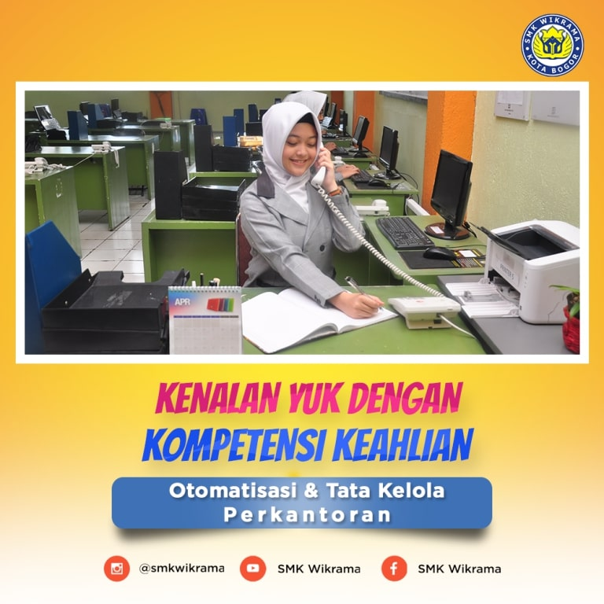

Rekayasa Perangkat Lunak / Pengembangan Perangkat Lunak dan Gim
SMK WIKRAMA BOGOR - Kompetensi keahlian Rekayasa Perangkat Lunak (RPL) SMK Wikrama dibuka pada tahun 2003, dan memperoleh akreditasi dari Badan Akreditasi Nasional Sekolah/Madrasah (BAN-SM) dengan nilai A.
Keahlian yang dimiliki lulusan RPL Wikrama :
- Memiliki kemampuan menjelaskan dan menerapkan ilmu matematika dan ilmu komputer dasar sebagai basis pembangunan sebuah perangkat lunak yang berkualitas.
- Memiliki kemampuan menjelaskan, menerapkan, dan memilih berbagai teori, model, teknik dan teknologi yang tepat dalam pembangunan perangkat lunak yang berkualitas pada lingkungan berbasis web, desktop dan mobile.
- Merancang solusi perangkat lunak berbasis web, desktop dan mobile dalam berbagai skala kompleksitas yang mengintegrasikan persoalan ethical, social, legal, security dan ekonomi.
- Terampil menggunakan teknologi dan tools terkini dalam pembangunan perangkat lunak yang berkualitas pada lingkungan berbasis web dan mobile.
- Menerapkan profesionalisme dalam berkarya sesuai dengan etika bidang Rekayasa Perangkat Lunak.
- Berkomunikasi secara efektif pada berbagai kalangan baik secara lisan maupun tulisan.
- Mengikuti perkembangan berbagai teknik, teknologi dan tools baru dalam bidang rekayasa perangkat lunak pada lingkungan berbasis web, desktop dan mobile.
- Bekerjasama secara efektif baik sebagai anggota tim maupun pemimpin tim pada proyek pembangunan perangkat lunak.
- Mengidentifikasi kebutuhan untuk menjadi seorang wirausaha/pebisnis dibidang industri kreatif khususnya dalam pengembangan perangkat lunak.
Kompetensi keahlian RPL SMK Wikrama sudah memiliki sertifikasi internasional seperti TOEIC Test (Test of English International Communication), Microsoft Technology Associate (Office, HTML 5, Database Fundamental).
Keahlian RPL Wikrama memiliki 3 Laboratorium untuk menunjang praktik siswa yaitu Laboratorium Komputer, Software House, dan Ruang Teaching Factory.
Model Belajar yang diterapkan di RPL SMK Wikrama adalah model Pembelajaran Teaching Factory.
Model Pembelajaran Teaching Factory adalah model pembelajaran berbasis produk melalui sinergi sekolah dengan industri. Pembelajaran Teaching Factory menghasilkan Produk berupa jasa/kemampuan/barang yang jadi sesuai dengan standar industri.
Kegiatan Competency Based Training (CBT)
CBT merupakan pendekatan pembelajaran khas SMK Wikrma, bertujuan untuk menumbuh kembangkan karakter dan etos kerja (disiplin, tanggung jawab, jujur, kerjasama, kepemimpinan, dan lain-lain) yang dibutuhkan Industri dan Dunia Kerja (IDUKA) serta meningkatkan kualitas hasil pembelajaran.
Kegiatan CBT Rekayasa Perangkat Lunak meliputi kegiatan dimulai dari mencari proyek baik dari internal/eksternal sekolah, mengidentifikasi kebutuhan pemberi proyek (requirements), melakukan desain proyek (design), melakukan implementasi (coding), dan melakukan pengujian proyek (testing).
Alumni RPL SMK Wikrama telah banyak yang bekerja di dalam maupun luar negeri, dan beberapa ada yang telah mendirikan Perusahaaan di bidang IT.
Standar lulusan RPL Wikrama diharuskan mampu menguasai Desktop Programming, Website Programming, Mobile Programming, Bussiness Analyst, Database Administration.
Kompetensi Keahlian RPL SMK Wikrama telah menjalin mitra dengan puluhan Perusahaan/Industri, untuk menunjang prospek pekerjaan setelah lulus dari Wikrama.
Berikut perusahaan yang bermitra dengan RPL Wikrama :
- PT Sakura System - Software house di bawah Nippon Steel - Jakarta Pusat
- PT Anabatic Technology - IT Solution dengan taraf Internasional - Tangerang
- PT Astra Autopart Cibitung - Sistem Kaizen - Software Development – Bekasi
- PT Fujitech
- PT Epson
- PT Amerta Indah Otsuka - Pasar Rebo Jakarta
- PT. Honoris - Ciawi Bogor
- PT. Nittoh Presisi Indonesia - Jl. Raya Jakarta Bogor KM 47, Nanggewer Mekar Cibinong
- PT. Hitachi Indonesia – Jakarta
- PT Hilex – Tangerang
- PT. Reksa Digitama - Bogor
- CV. Kunci Sukses Muamalah
- PT. Stams Lancar Jaya
- PT. Honda Prospect Motor – Jakarta Utara
- PT. Gemms Solution Indonesia – Jakarta Utara
- PT. Grup Riset Potensial – Jakarta Pusat
- PT. Multipoplar Technology Tbk. – Tangerang, Banten
- PT. Jessindo Prakarsa – Kota Bogor
- BPR Dana Mandiri Bogor
- PT. Karada Sehat Indonesia – Jakarta Barat
- PT. Gateway Internusa – Kota Tangerang
- PT. Total Solusi Teknologi – Jakarta Selatan
- Sherlock Swiss – Jakarta Selatan
- PT. PP (Persero) Tbk. – Cisarua, Bogor
- Abu Corp – Jakarta Selatan
- RS MH Thamrin Cileungsi – Cileungsi, Bogor
- STIE Tazkia – Bogor
- PT. JUKE SOLUTIONS TEKNOLOGI – Jakarta Pusat
- Daftrun Technology – Depok
- PT. Rajamobil Media – Jakarta Selatan
- PT. CITACONTRAC (Mitra PLN) – Jakarta
- PT. SWIFECT SOLUSI INDONESIA – Jakarta Barat
- PT. Parikesit Indotama – Jakarta Selatan
- Badan Nasional Penanggulangan Bencana - Citeureup – Bogor
- PT. Mede Media Softika – Jakarta Pusat
- PT. Jaringan Intech Indonesia – Jakarta Pusat
- PT. Daehan Global – Citeureup, Bogor
- PT. Echoscript Indonesia – Karawang
- 4 VISION MEDIA – Bandung
- Aksimaya – Bogor Utara
- Antavaya Tour – Jakarta
- Arfadia – Jakarta Selatan
- Bank Bukopin – Sukabumi
- CV. Jamrudt – Ciawi, Bogor
- Gerbang Indonesia Teknologi, PT. (Dreamcube) – Kota Bogor
- GSMKonsep – Jakarta Pusat
- Kenjalo (Global Technology Resources) – Jakarta
- Ninesavana – Jakarta Selatan
- Pengadilan Negeri Jakarta Barat – Jakarta
- Private Leasure Indonesia – Wilayah Jakarta
- PT. Baranusa Danatama Group – Jakarta Selatan
- PT. Central Capital Futures – Jakarta Pusat
- PT. Fatiha Sakti (Fast8) – Jakarta
- PT. Gama inti wahana – Wilayah Jakarta
- PT. Giosis – Jakarta Selatan
- PT. Global Dimensi Mandiri – Bekasi
- PT. Go Online Solusi – Jakarta Barat
- PT. Hanoman Cendekia Interaktif – Jakarta
- PT. Hastacacitra Pastika – Jakarta
- PT. Hastings Mitratama – Jakarta Utara, dll.

Teknik Komputer dan Jaringan / Teknik Jaringan Komputer dan Telekomunikasi
SMK WIKRAMA BOGOR - Kompetensi keahlian Teknik Komputer dan Jaringan dibuka di SMK Wikrama pada tahun 2004, dan memperoleh akreditasi dari Badan Akreditasi Nasional Sekolah/Madrasah (BAN-SM) dengan nilai A.
Keahlian yang akan dimiliki lulusan TKJ Wikrama diantaranya mampu menjadi seorang teknisi jaringan, administrasi jaringan, network engineer dan menguasai komunikasi, menginstalasi perangkat komputer personal, menginstal sistem operasi dan aplikasi, menginstal perangkat jaringan lokal (Local Area Network), dan menginstal perangkat jaringan berbasis luas (Wide Area Network)
Kompetensi keahlian TKJ SMK Wikrama sudah memiliki sertifikasi internasional seperti CNAP (Cisco Networking Academy Program) dan MCNA (Mikrotik Certified Network Associate).
TKJ Wikrama memiliki 3 Laboratorium untuk menunjang praktik siswa yaitu Laboratorium perakitan, perbaikan dan perawatan komputer, laboratorium instalasi jaringan LAN dan laboratorium instalasi jaringan WAN.
Model Belajar yang diterapkan di TKJ SMK Wikrama adalah model Pembelajaran Teaching Factory.
Model Pembelajaran Teaching Factory adalah Teaching Factory adalah model pembelajaran berbasis produk melalui sinergi sekolah dengan industri. Pembelajaran Teaching Factory menghasilkan Produk berupa jasa/kemampuan/barang yang jadi sesuai dengan standar industri.
Produk/jasa hasil pembelajaran Teaching Factory TKJ SMK Wikrama diantaranya :
- Jasa Membangun Laboratorium Komputer Sekolah
- Jasa Perakitan Komputer
- Jasa Membangun Jaringan VOIP ( Voice over Internet Protocol)
- Jasa Instalasi Jaringan Hotspot
- Jasa Membangun Routing Jaringan WAN (Wide Area Network)
- Jasa Instalasi Jaringan Intranet
- Jasa Membangun SIstem Hosting
- Jasa Instalasi Fiber Optik
- Jasa Manajemen Bandwidth dan Load Balancing
- Simulasi Digital (SIMDIG) E- Book
- Simulasi Digital (SIMDIG) CV
- Jasa Membangun jaringan VLAN (Virtual Local Area Network)
- Jasa Instalasi Sistem Operasi
- Jasa Instalasi Driver Komputer
- Jasa Instalasi Software Aplikasi
- Kasir Sederhana C++
- Pembuatan Aplikasi Guest Book
- Pembuatan Aplikasi Evodev
- Pembuatan Aplikasi Donasi dan Website
- Testing Aplikasi Kejar.id
Kompetensi Keahlian TKJ SMK Wikrama telah menjalin mitra dengan puluhan Perusahaan/Industri, untuk menunjang prospek pekerjaan setelah lulus dari Wikrama.
Berikut perusahaan yang bermitra dengan TKJ Wikrama :
- PT. Nutrifood Indonesia Bogor
- PT. Ghalia Indonesia Printing
- PT. Hipernet Indodata
- PT. Kabatama Raya
- PT. Indonesia Indicator
- PT. Tirta Fresindo Jaya (Mayora Group)
- Macro Komputer
- SEAMEO Biotrop
- PT. Jetcoms Netindo
- PT. Astra Auto Part
- PT. Global TV
- PT. Ricky Putra Globalindo – Citeureup, Bogor
- PT. Halik Selindo Alpha – Jakarta
- Semesta Citra Media – Jakarta
- PT. FS Power Control – Jakarta
- PT. Supra Primatama Nusantara – Jakarta
- Biznet networks – Bogor Tengah
- PT. Kahar Duta Sarana – Jakarta Selatan
- Kalbis Institute – Jakarta
- Kementrian Pendidikan dan kebudayaan Direktorat Pembinaan SMK – Jakarta
- Netcampus Training Center – Jakarta
- PT. Angelina Kartika – Bogor Selatan
- PT. Pulsa Inti Nasional – Jakarta Barat
- PT. Pusat Media Indonesia – Bogor Utara
- PT. Supra Primatama Nusantara (BiznetNetworks) – Jakarta
- PT. Witami Prabuana Cipta – Jakarta
- PT. Amerta Indah Otsuka – Sukabumi
- PT. Information Technology Service Centre – Jakarta Pusat
- PT. Jayadipa Mandiri – Jakarta Selatan
- PT. Netplus Technology – Jakarta Pusat
- PT. Supra Primatama Nusantara – Jakarta
- PT. Infotek Jaya Makmur – Jakarta Utara
- PT. Fiber Networks Indonesia – Jakarta Selatan
- PT. Ramtec Global Network Jakarta Timur
- Pusat Penelitian Bioteknologi LIPI – Bogor, dll.

Multimedia / Desain Komunikasi Visual
SMK WIKRAMA BOGOR - Kompetensi keahlian Multimedia SMK Wikrama Bogor dirikan pada tahun 2011 dan sudah mendapat akreditasi A. dan memperoleh akreditasi dari Badan Akreditasi Nasional Sekolah/Madrasah (BAN-SM) dengan nilai A.
Keahlian yang dimiliki lulusan Multimedia SMK Wikrama
Kompetensi keahlian Multimedia menjawab tantangan perkembangan komunikasi visual, desain grafis dan multimedia. Materi yang dipelajari antara lain pengetahuan dasar tentang seni terapan, fotografi digital (tata cahaya, komposisi, lighting studio), videografi (Adobe Premiere, Adobe After Effect), desain grafis (Adobe Photoshop, Adobe Illustrator, Adobe Indesign), kemampuan grafis 3D (Blender, 3D Studio Max), kemampuan animasi (HTML, Adobe Flash) dan proses kreatif dalam membuat suatu karya audio visual.
Prospek Kelulusan
Lulusan Multimedia Wikrama dapat memiliki kesempatan kerja yang luas dibidang periklanan online/offline, production house, radio & televisi, studio foto, percetakan grafis, corporate brand identity, penerbit majalan/Koran.
Tuntutan perkembangan zaman menjadikan teknologi berkembang sedemikian pesat, hingga hampir semua Perusahaan membutuhkan seoarang designer grafis untuk keperluan promosi melalui media social dan media online yang lain, ini adalah peluang besar bagi lulusan jurusan Multimedia.
Peluang berwirausaha dengan bekal kompetensi keahlian Multimedia juga begitu besar, sebagaimana teknologi yang semakin maju.
Fasilitas
Kompetensi keahlian Multimedia Wikrama memiliki beberapa fasilitas serta sarana & prasarana yaitu laboratorium studio foto, laboratorium komputer editing, ruang belajar bersama, alat rekam audio digital, komputer rendering, kamera mirrorless dan DSLR.
Sertifikasi
Kompetensi keahlian Multimedia SMK Wikrama sudah memiliki sertifikasi internasional seperti TOEIC Test (Test of English International Communication), BNSP (Badan Nasional Sertifikasi Profesi), TOEIC (Test of English for International Communication), Adobe.
Model Pembelajaran Teaching Factory
Model Belajar yang diterapkan di RPL SMK Wikrama adalah model Pembelajaran Teaching Factory
.Model Pembelajaran Teaching Factory adalah model pembelajaran berbasis produk melalui sinergi sekolah dengan industri. Pembelajaran Teaching Factory menghasilkan Produk berupa jasa/kemampuan/barang yang jadi sesuai dengan standar industri.
Kegiatan Competency Based Training (CBT)
CBT merupakan pendekatan pembelajaran khas SMK Wikrma, bertujuan untuk menumbuh kembangkan karakter dan etos kerja (disiplin, tanggung jawab, jujur, kerjasama, kepemimpinan, dan lain-lain) yang dibutuhkan Industri dan Dunia Kerja (IDUKA) serta meningkatkan kualitas hasil pembelajaran.
Mitra Industri
Kompetensi Keahlian Multimedia SMK Wikrama telah menjalin mitra dengan puluhan Perusahaan/Industri, untuk menunjang prospek pekerjaan setelah lulus dari Wikrama.
Berikut perusahaan yang bermitra dengan Multimedia SMK Wikrama:
- Binus TV
- Riovertex Animation Studios – Bogor
- PT. Eka Surya
- PT. Kreasi Mata Ketiga
- PT. Media Pangan Indonesia
- Mata Angin Advertising
- Pantarei Advertising
- PT. Amertha Cipta Ananta
- PT. Zamasco Mitra Solusindo
- Taufiq TV Production – Bogor
- Hero Photography – DKI Jakarta
- PT. Eksis Banget Indonesia – Jakarta
- Thepotomoto – Jakarta Selatan
- Media Pangan – Bogor
- Madania School – Bogor
- PT. Yongjin Javasuka Garment – Sukabumi
- Maktour – Jakarta Timur
- PT. Trigada Laroiba Mitra – Bogor
- Sherlock Swiss – Jakarta
- PT. Family Total
- Abu Tours & Travel – Depok

Tataboga / Kuliner
SMK WIKRAMA BOGOR - Kompetensi keahlian Tata Boga SMK Wikrama Bogor dirikan pada tahun 2017 dan sudah memperoleh akreditasi dari Badan Akreditasi Nasional Sekolah/Madrasah (BAN-SM) dengan nilai B.
Tata boga adalah ilmu pengetahuan mengenai boga (seni mengolah masakan) yang meliputi persiapan pengolahan sampai dengan menghidangkan makanan itu sendiri yang bersifat tradisional maupun Internasional
Kompetensi Keahlian Tata Boga, merupakan salah satu jurusan atau kompetensi yang memberikan Pelajaran di bidang Pengolahan dan Penyajian Makanan baik oriental maupun kontinental serta mampu memberikan pelayanan makanan dan minuman di restoran (Food and Beverage Service).
Keahlian: Pengetahuan pariwisata, pengetahuan mengenai bahan, pengolahan, penyajian dan penyimpanan bahan sesuai dengan jenis bahan makanannya, memerhatikan kandungan gizi, sanitasi, higiene dan keamanan pangan yang disajikan, mampu mengolah berbagai jenis hidangan Indonesia, kontinental, pastry & bakery serta disajikan secara/berstandar internasional dan mampu melayani berbagai pelayanan makanan di restoran.
Model Pembelajaran Teaching Factory
Model Belajar yang diterapkan di Tataboga SMK Wikrama adalah model Pembelajaran Teaching Factory
.Model Pembelajaran Teaching Factory adalah model pembelajaran berbasis produk melalui sinergi sekolah dengan industri. Pembelajaran Teaching Factory menghasilkan Produk berupa jasa/kemampuan/barang yang jadi sesuai dengan standar industri.
Kegiatan Competency Based Training (CBT)
CBT merupakan pendekatan pembelajaran khas SMK Wikrama, bertujuan untuk menumbuh kembangkan karakter dan etos kerja (disiplin, tanggung jawab, jujur, kerjasama, kepemimpinan, dan lain-lain) yang dibutuhkan Industri dan Dunia Kerja (IDUKA) serta meningkatkan kualitas hasil pembelajaran.
CBT pada kompetensi keahlian Tata Boga di antaranya CBT kewirausahaan, CBT pendidikan lingkungan hidup, CBT humas dan CBT produktif.
Keunggulan: Siswa jurusan Tata Boga mampu bekerja diberbagai bidang jasa boga seperti restoran, hotel, rumah sakit, katering sesuai dengan minat dan bakat yang telah dipelajari.
Fasilitas & Sarpras: Laboratorium Praktikum Pengolahan dan Penyajian, Laboratorium Tata Hidang dan Ruang Teori.
Sertifikasi: Badan Nasional Sertifikasi Profesi (BNSP)
Prestasi Kompetensi Keahlian Tataboga SMK Wikrama Bogor :
- Juara 1 Lomba Kreasi Olahan Pangan Lokal, Kementerian Pertanian Indonesia Tahun 2018
- Juara 3 Lomba Kreasi Olahan Pangan Lokal, Kementerian Pertanian Indonesia Tahun 2018
- Juara Harapan 1 Lomba Kreasi Olahan Pangan Lokal, Kementerian Pertanian Indonesia Tahun 2018
- Juara 3 Bogor Food Truk, Kreasi Kacang Koro bersama Komunitas Tukang Masak Bogor (KTMB) Tahun 2019
- Juara 3 Inovasi Bisnis Tingkat Siswa, Univeritas Djuanda Tahun 2019
- Juara 3 Lomba Kompetensi (LKS) Tingkat Kota Bogor untuk cabang lomba Cooking
Mitra Industri
- Hotel Borobudur Jakarta
- Swissbel Hotel Mangga Besar
- Arya Duta Bandung
- Pullman Ciawi Vimalla Hill Resort Spa & Convention
- Royal Tulip Gunung Geulis Resort and Golf
- The 1O1 Hotel Bogor Suryakencana
- Aston Bogor Hotel & Resort
- Salak Padjajaran Hotel
- The Sahira Hotel
- Pelangi Aqiqah Catering
- Vanila Catering
- Prospek profesi dan karir
- Restaurant
- Hotel
- Rumah Makan
- Usaha Catering
- Rumah Sakit
- Usaha Pelayanan Masal (orang banyak)
- Kapal Pesiar
- Bakery

Perhotelan / Hotel
SMK WIKRAMA BOGOR
Bidang Keahlian Pariwisata merupakan salah satu fokus program Revitalisasi SMK dalam rangka meningkatkan daya saing SDM Indonesia.
Seiring dengan nawacita presiden Republik Indonesia bapak Joko Widodo, bidang Pariwisata, Seni, dan Industri Kreatif mulai dikembangkan untuk menciptakan sumber daya unggul dan kreatif.
Merespon hal tersebut SMK Wikrama Bogor membuka Kompetensi Keahlian PERHOTELAN di tahun 2017, dan sekarang semakin berkembang.
Hal ini bertujuan salah satunya untuk memenuhi SDM dan menciptakan tenaga kerja yang terampil di bidang Perhotelan.
Nah bagi kalian yang masih bingung mau masuk jurusan apa, bisa kalian pilih jurusan Perhotelan.
Bidang pariwisata ini prospeknya cerah loooh.....
Untuk daftar bisa langsung klik link :
https://bit.ly/FormulirPendaftaranWikramaAtau hubungi hotline : 081909242411
#smkwikrama
#perhotelan
#perhotelan
#smkbogor
#smkhitz

Otomatisasi dan Perkantoran / Manajemen Perkantoran dan Layanan Bisnis
SMK WIKRAMA BOGOR - Kompetensi keahlian Otomatisasi dan Tata Kelola Perkantoran/Administrasi Perkantoran (OTKP) adalah jurusan yang pertama di SMK Wikrama Bogor, didirikan pada tahun 1996.
OTKP Wikrama mengantongi Akreditasi dari Badan Akreditasi Nasional Sekolah/Madrasah (BAN-SM) dengan nilai A.
Keahlian yang akan dimiliki lulusan OTKP Wikrama diantaranya, Mengetik cepat dengan teknik 10 jari dengan rata-rata kecepatan 250 EPM 98%, mengelola dokumen dan arsip kantor, menangani telepon, mengelola keuangan dan mampu menangani tamu.
Model Belajar yang diterapkan di OTKP SMK WIkrama adalah model Pembelajaran Teaching Factory.
Model Pembelajaran Teaching Factory adalah Teaching Factory adalah model pembelajaran berbasis produk melalui sinergi sekolah dengan industri. Pembelajaran Teaching Factory menghasilkan Produk berupa jasa/kemampuan/barang yang jadi sesuai dengan standar industri.
Hasil pelaksanaan model pembelajaran teaching factory ini tentunya banyak membawa dampak positif bagi SMK Wikrama, terutama dalam membentuk budaya industri dan budaya kerja yang efektif dan efisien baik pada individu siswa, tenaga pendidik dan kependidikan, yaitu :
- Terciptanya budaya disiplin
- Guru selain menjadi pendidik dan pembimbing, pada program ini guru juga menjadi operator, mentor dan inspector, fasilitator, inisiator dan inspirator ; serta Role Model.
- Pada proses pembelajaran menerapkan budaya industri dengan adanya standar kualitas (quality control), target waktu, efisiensi proses produksi, rotasi kerja (shift), produk kerja yang jelas, hasil praktik dapat menjadi sumber pendapatan (generating income)
- Sekolah mempunyai network dengan industri, baik untuk transfer teknologi maupun membangun budaya industri sekolah.
- Terjadi perubahan mindset dari pendekatan teori dan praktik simulasi ke pendekatan produksi.
- Ada perubahan proses dari pola "belajar" menjadi pola "aplikatif". Pada pola pendekatan produksi, penekanan lebih diarahkan ke benda jadi yang nantinya "berguna" baik untuk internal sekolah maupun masyarakat.
OTKP Wikrama telah memperoleh banyak prestasi peserta didik seperti juara II lomba keterampilan siswa bidang lomba sekretaris tingkat provinsi tahun 2016 dan juara I lomba olimpiade sekretaris tingkat nasional tahun 2017. OTKP Wikrama juga telah bermitra dengan puluhan.
Lulusan OTKP Wikrama akan mengikuti program sertifikasi untuk menunjang karir, diantaranya TOEIC (Test of English for International Communication), tes mengetik internasional (typingweb.com), Microsoft Office Specialist (MOS – Certiport).
OTKP Wikrama telah bermitra dengan puluhan Perusahaan/Industri, untuk menunjang prospek pekerjaan setelah lulus dari Wikrama.
Berikut perusahaan yang bermitra dengan OTKP SMK Wikrama :
- Danone Aqua – Jl. Mayjen HE . Sukma, Caringin, Bogor
- CV. Prima Utama Bogor – wilayah Bogor
- CV. Delima Mandiri – Kota Bogor
- PT. Solid Gold Berjangka – Jakarta Pusat
- PT. Telkom Indonesia – Jakarta
- PT. Myindo Cyber Media – Jakarta Selatan
- PT. Lotus Boga Lima – Jakarta
- PT. Tatamulia Nusantara Indah – wilayah Jakarta
- PT. Yongjin Javasuka Garment – Sukabumi
- Que Bread Bakery (kuntum farm field) – Bogor
- ICMI Travel – Jakarta Pusat
- Rumah Sakit Mitra Keluarga Cibubur – Bekasi
- PP University – Cisarua, Bogor
- Perwiratama Group – Bogor
- PT. Laxmirani Mitra Garmindo – Jakarta
- Royal Hotel Djuanda Bogor – Bogor Tengah
- Badan Pendidikan dan Pelatihan Anggaran dan Perbendaharaan (Kementerian Keuangan BPPK) – Jakarta Selatan
- PT. Excellera Consultant – Jakarta Selatan
- PT. Agrinesia Raya – Bogor
- PT. Indo Prima Semesta – Bogor Utara
- PT. Aura Cantik Indonesia – Jakarta Utara
- PT. Bonna Indonesia – Bogor
- Shakti Top Finance – Jakarta
- PT. Sofie Mode Huis
- Tb Satria Baja – Depok
- PT. Naila Syafaah Wisata Mandiri – Tangerang Selatan
- Hotel pesona alam resort – Cisarua, Bogor
- Unity – Bogor
- Venice Gallery – Bogor
- PT. Dinamis Artha Sentosa – Depok
- RS Vania – Bogor
- Trimitrasis – Jakarta
- PT. Ardendi Jaya Sentosa (AOP) – Bogor
- PT. Dasan Pan Pacific Indonesia – Sukabumi
- PT Twintek – Sukabumi
- CV Prima Utama Bogor – Wilayah Bogor
- Matahari Departement Store – Bogor
- PT. Bangun Kharisma Prima – Jakarta Barat
- PT. Besmart Global Indonesia – Jakarta
- PT City Directory Online – Jakarta
- PT. Indomarco Prismatama – Cibinong, Bogor
- PT. Jasa Marga – Bogor
- PT. Milko Beverage Industri – Bogor
- PT. Quantum Boga Makmur – Jakarta
- PT. Tatamulia Nusantara Indah – Jakarta
- PT. Astra Otoparts – Bogor
- PT. Lidosarana Prima – Sukabumi
- PT. Suryamas Dutamakmur, Tbk – Bogor
- Politeknik Kent Bogor – Bogor, dll.

Bisnis Daring dan Pemasaran / Pemasaran
SMK WIKRAMA BOGOR – Kompetensi keahlian Bisnis Daring dan Pemasaran SMK Wikrama Bogor didirikan pada tahun 2014, dan dan memperoleh akreditasi dari Badan Akreditasi Nasional Sekolah/Madrasah (BAN-SM) dengan nilai A.
Keahlian yang dimiliki lulusan BDP SMK Wikrama
Portofolio seperti membuat desain untuk bisnis sendiri, creative content (berbasis media sosial/website), website berbasis toko online dengan bahasa pemrograman sederhana dan soft skill yang terdiri dari komunikasi, telemarketing dan marketing komunikasi.
Sertifikasi
Kompetensi keahlian BDP SMK Wikrama sudah memiliki sertifikasi internasional seperti TOEIC Test (Test of English International Communication), BNSP (Badan Nasional Sertifikasi Profesi), Microsoft Office Specialist (MOS – Certiport), Marketing Online.
Prospek Kelulusan
Lulusan BDP Wikrama dapat memiliki kesempatan kerja yang luas dibidang periklanan online/offline dengan kemampuan foto produk, desain, copy writing. Tuntutan perkembangan zaman menjadikan teknologi berkembang sedemikian pesat, hingga hampir semua Perusahaan membutuhkan seorang lulusan BDP untuk keperluan promosi melalui media sosial dan media online yang lain, ini adalah peluang besar bagi lulusan jurusan BDP.
Model Pembelajaran Teaching Factory
Model Belajar yang diterapkan di BDP SMK Wikrama adalah model Pembelajaran Teaching Factory.
Model Pembelajaran Teaching Factory adalah model pembelajaran berbasis produk melalui sinergi sekolah dengan industri. Pembelajaran Teaching Factory menghasilkan Produk berupa jasa/kemampuan/barang yang jadi sesuai dengan standar industri Kegiatan
Competency Based Training (CBT)
CBT merupakan pendekatan pembelajaran khas SMK Wikrama, bertujuan untuk menumbuh kembangkan karakter dan etos kerja (disiplin, tanggung jawab, jujur, kerjasama, kepemimpinan, dan lain-lain) yang dibutuhkan Industri dan Dunia Kerja (IDUKA) serta meningkatkan kualitas hasil pembelajaran.
CBT pada kompetensi keahlian BDP dilakukan dengan cara memberikan penugasan kepada siswa/i berupa proyek. Siswa/i membantu para pemilik usaha pada UMKM dalam mengoptimalkan usaha (pemasaran online).
Fasilitas dan Sarpras
Kompetensi keahlian Bisnis Daring dan Pemasaran memiliki fasilitas serta sarana & prasarana yang menunjang seperti laboratorium komputer, laboratorium jurusan (wikrama shop), ruang teori.
Mitra Industri
Kompetensi Keahlian BDP SMK Wikrama telah menjalin mitra dengan puluhan Perusahaan/Industri, untuk menunjang prospek pekerjaan setelah lulus dari Wikrama.
Berikut perusahaan yang bermitra dengan BDP SMK Wikrama:
- Tapp Market
- PT. Cyberlabs
- UMKM kota Bogor
- Software house
- AGMARI
- PT. Surya Kencana Propertindo
- PT. Eka Surya
- PT. Kreasi Mata Ketiga
- PT. Media Pangan Indonesia
- Mata Angin Advertising
- Pantarei Advertising
- PT. Amertha Cipta Ananta
- PT. Zamasco Mitra Solusindo
- Taufiq TV Production – Bogor
- Hero Photography – DKI Jakarta
- PT. Eksis Banget Indonesia – Jakarta
- Thepotomoto – Jakarta Selatan
- Media Pangan – Bogor
- Madania School – Bogor
- PT. Yongjin Javasuka Garment – Sukabumi
- Maktour – Jakarta Timur
- PT. Trigada Laroiba Mitra – Bogor
- Sherlock Swiss – Jakarta
- PT. Family Total
- Abu Tours & Travel – Depok